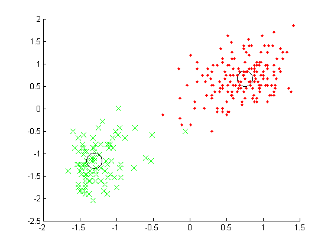

Run Kmedoids on the old faithful demo
X = load('faithful.txt');
X = standardizeCols(X);
N = size(X,1);
Y = X';
dst = sqdist(Y,Y);
S = exp(-dst);
K = 2;
[idx,dpsim]=kmedoids(S,K,1,10);
[score, bestrun] = max(dpsim(end,:));
ndx = idx(:, bestrun);
centroids = unique(ndx);
for k=1:K
tmp = find(ndx==centroids(k));
assign(tmp) = k;
end
figure; hold on
symbols = {'r.', 'gx', 'b', 'k'};
for k=1:K
plot(X(centroids(k),1), X(centroids(k),2), 'ko', 'markersize', 20);
tmp = find(assign==k);
plot(X(tmp,1), X(tmp,2), symbols{k}, 'markersize', 10);
end
